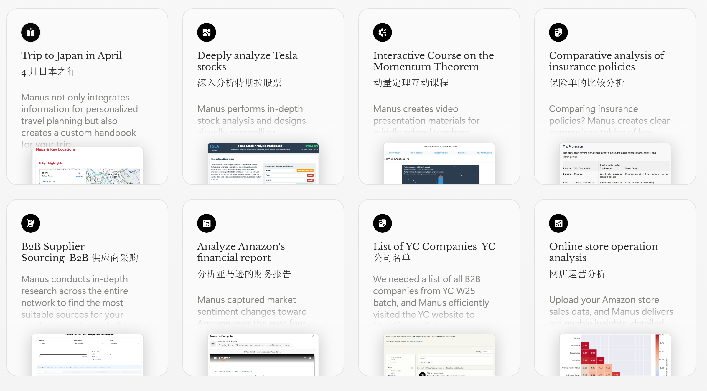
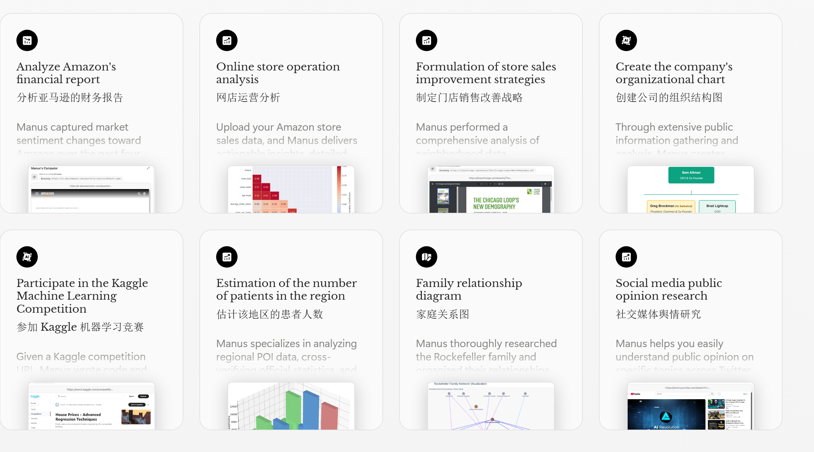
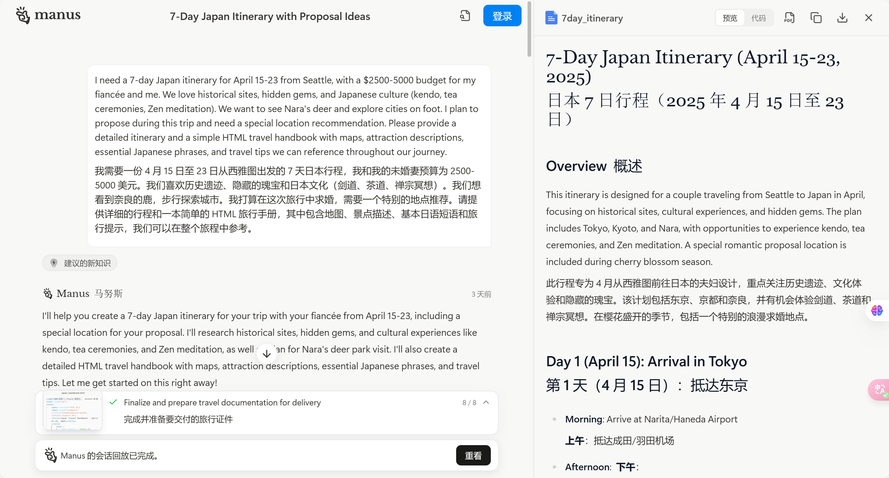
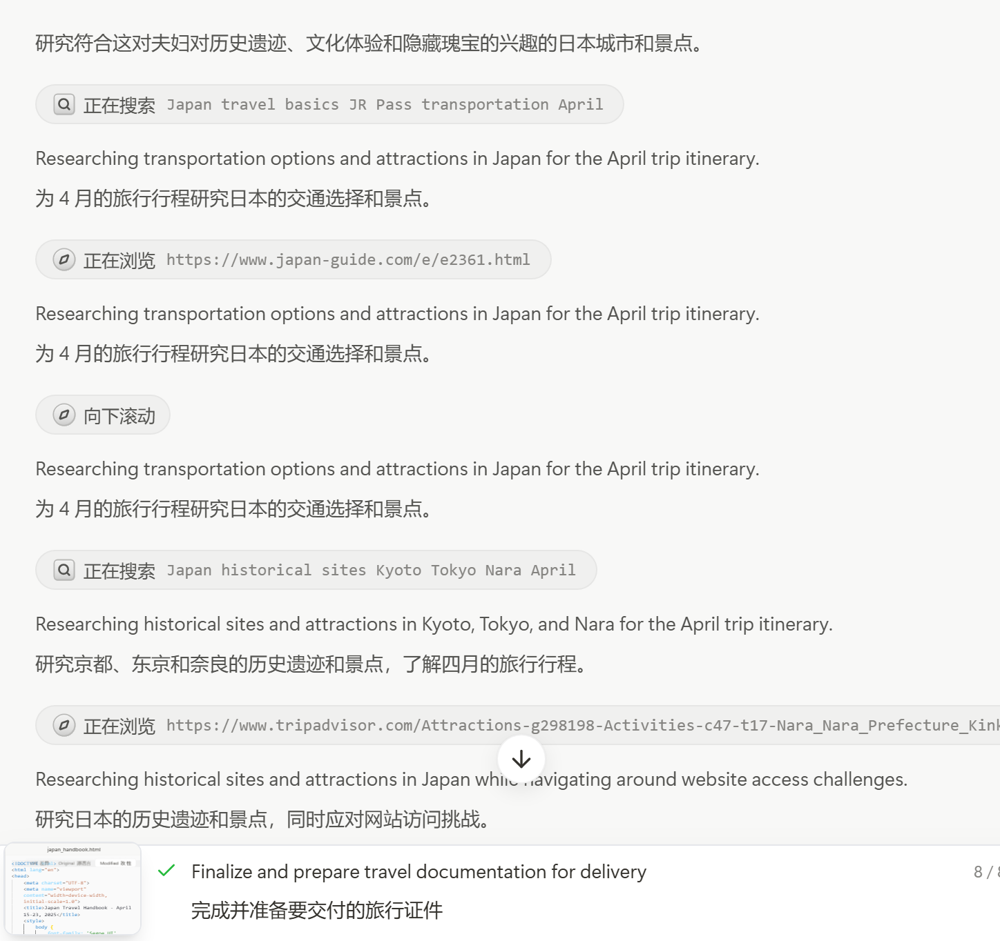
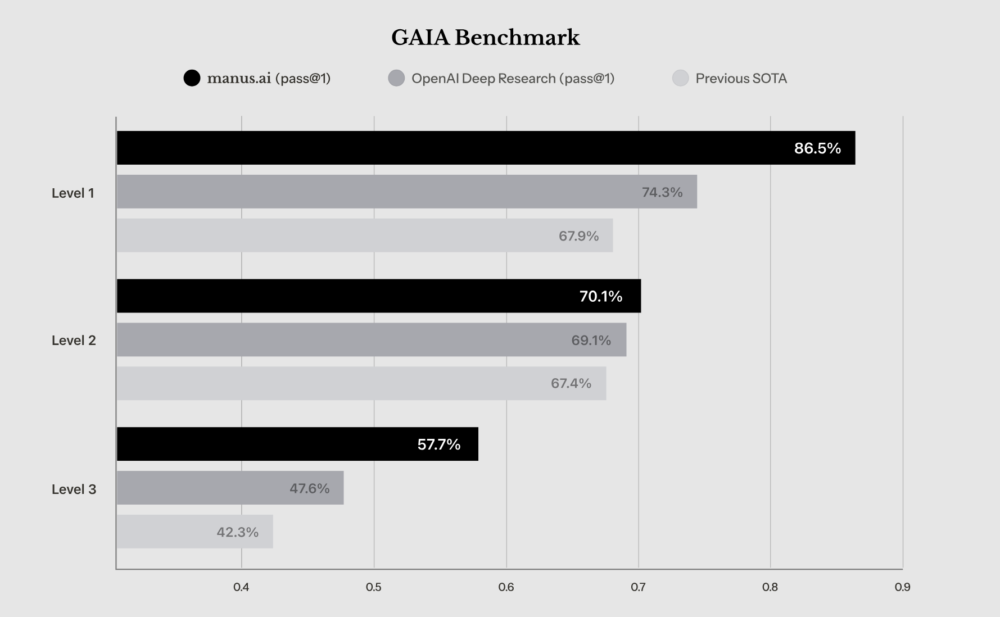
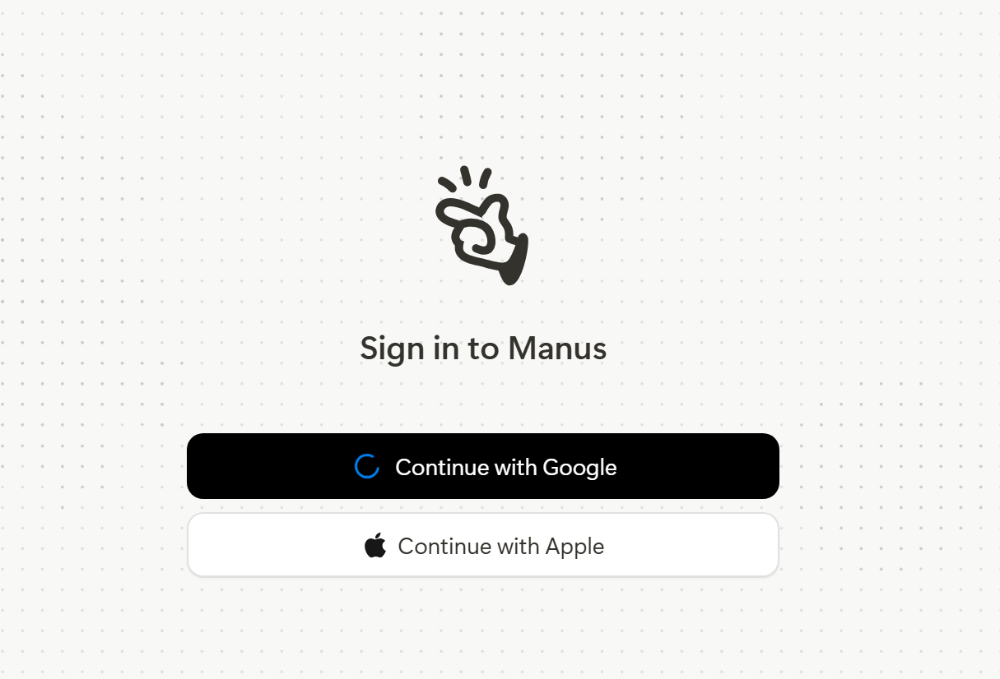

引言：
2025年3月6日凌晨，AI圈被一款名为「Manus」的产品彻底引爆！它不仅是全球首款真正意义上的通用型AI Agent，更以“中国造”的身份在GAIA基准测试中碾压OpenAI等巨头。这款由Monica.im团队研发的产品，凭借其“从规划到交付”的全链路自主能力，被誉为“AI Agent的GPT时刻”——从此，AI不再只是回答问题，而是直接帮你完成工作 。
一、Manus是什么？
核心理念：Manus源自拉丁文“Mens et Manus”（头脑与手），寓意“知行合一”。它并非传统聊天机器人，而是一个能独立调用工具、自主执行任务的“数字代理人”。
- 功能定位：无论是制作PPT、分析股票、规划旅行，还是编写代码、筛选简历、审核合同，Manus都能在云端自主完成，最终交付可直接使用的成果（如网页、图表、文档等）。

- 技术突破：采用多智能体协作架构（Multiple Agent），通过规划代理、执行代理、验证代理的分工协作，模拟人类工作流程，甚至能根据用户反馈调整执行策略。

二、Manus的三大颠覆性优势
- 直接交付成果，而非建议传统AI（如ChatGPT）提供的是文字答案，而Manus直接生成完整成果。例如：
- 案例1：用户输入“制作特斯拉股票分析报告”，Manus自动搜索数据、编写代码生成可视化图表，并输出包含SWOT分析和投资建议的完整网页。
- 案例2：用户要求“规划日本求婚旅行”，Manus不仅能设计行程，还会生成包含地图、景点介绍和日语短语的HTML旅行手册。


- 云端自主运行，解放用户时间Manus完全运行在云端虚拟机中，用户只需下达指令即可关闭电脑，待任务完成后自动接收通知。这种“委托-交付”模式，彻底告别传统AI需要人工监督的局限。
- 自主学习，越用越懂你Manus具备记忆能力，能记录用户偏好（如偏好Excel表格而非文字报告），并在后续任务中自动优化输出形式。其多代理架构还能通过强化学习持续提升任务处理效率。
三、实测案例：Manus如何改变工作流？
- 教育领域：中学教师输入“制作动量守恒定律动画课件”，Manus自动生成HTML演示文稿并嵌入交互式动画。
- 企业场景：上传40份简历，Manus自动解压文件、分析候选人信息，并按岗位需求生成排名表格。
- 投资分析：深度解析英伟达财报，交叉验证数据源，输出包含技术指标和风险预测的仪表盘。
- 生活助手：根据预算和兴趣定制旅行路线，甚至推荐求婚场地并整合日语应急短语。
四、为什么Manus值得关注？
- 行业标杆表现：在GAIA基准测试（评估AI解决真实问题的能力）中，Manus以显著优势超越OpenAI等竞争对手，刷新多项SOTA记录。
- 中国团队的突破：创始团队由连续创业者肖弘领衔，产品从底层架构到应用场景均为自主研发，展现了国内AI技术的跃迁式进步。
- 未来潜力：目前Manus已支持50+场景用例，从B端数据分析到C端生活服务，其能力边界仍在不断扩展，甚至被团队称为“每天都在教我们做人”。

五、如何体验Manus？
用户可通过官网（https://manus.im）申请资格。内测用户反馈显示，复杂任务（如编写网页游戏）需数小时完成，但全程无需人工干预。
注册上，目前仅支持Apple和Google账号

结语：
Manus的诞生，标志着AI从“辅助工具”向“数字同事”的质变。它不仅是技术上的突破，更重新定义了人机协作的边界。正如网友所言：“未来的智能体，不再是冰冷的代码，而是真正理解需求、解决问题的伙伴。” 或许，属于AI的“贾维斯时代”，已悄然拉开序幕。
延伸阅读：更多实测案例与技术解析，可访问Manus官网用例集（https://manus.im/usecases）。